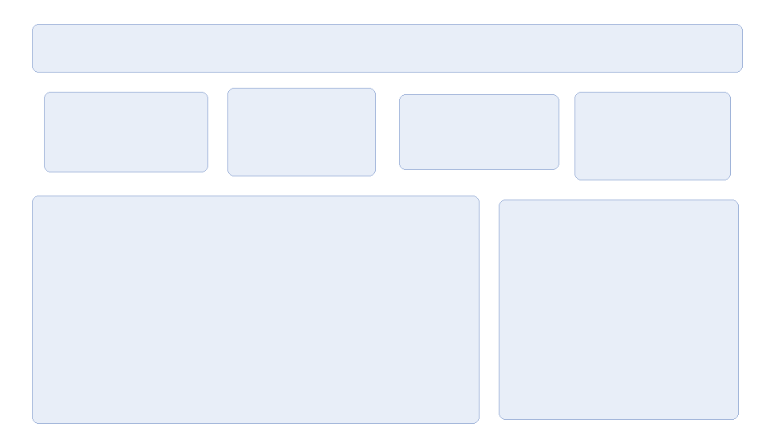
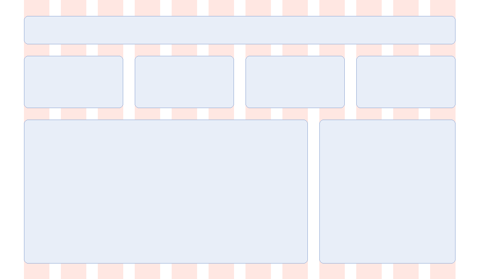

4. レイアウト
レイアウトとは、限られた領域の中に要素を配置することです。整列と近接の原則（デザインの基本原則）を、画面や資料の全体に適用する方法として、グリッドシステムと余白の規則を説明します。
4.1. グリッドシステム
グリッドシステムは、画面をあらかじめ等しい幅の列（カラム）に分割しておき、すべての要素をカラムの境界に揃えて配置する方法です。グリッドは次の 3 つの値で決まります。
用語 |
内容 |
|---|---|
カラム |
要素を配置する列です。要素の幅は、カラム何個分かで決めます。 |
ガター |
カラムとカラムの間の余白です。 |
マージン |
画面の端とカラムの間の余白です。 |
画面の幅を \(W\)、マージンを \(m\)、ガターを \(g\)、カラム数を \(n\) とすると、1 カラムの幅 \(w\) は次の式で求められます。
たとえば、\(W = 960\)、\(m = 48\)、\(g = 24\)、\(n = 12\) のとき、\(w = (960 - 96 - 264) / 12 = 50\) px です。
カラム数には 12 がよく使われます。12 は 2、3、4、6 で割り切れるため、画面を 2 等分、3 等分、4 等分、6 等分するいずれの配置にも対応できるからです。
図 4.1 と図 4.2 は、ダッシュボード風の画面の骨組みです。改善前は、要素の位置と大きさを目分量で決めています。改善後は、12 カラムのグリッドに沿って、指標カードを 3 カラムずつ、グラフを 8 カラム、表を 4 カラムにしています。薄い赤の帯がカラムを表します。

図 4.1 改善前：位置と大きさを目分量で決めた配置

図 4.2 改善後：12 カラムのグリッドに沿った配置
改善前の配置は、一見するとそれほど悪くありません。しかし、カードの上端や高さ、間隔がわずかにずれているため、全体として落ち着かない印象を与えます。このような小さなずれは、読み手が意識しなくても「整っていない」と感じる原因になります。
グリッドの計算は、次のようなクラスにまとめておくと扱いやすくなります。
@dataclass(frozen=True)
class Grid:
"""カラム数・マージン・ガターから各カラムの位置を計算する。"""
width: int
columns: int = 12
margin: int = 48 # ページ左右の余白
gutter: int = 24 # カラム間の余白
@property
def column_width(self) -> float:
"""1 カラムの幅。"""
content = self.width - self.margin * 2
return (content - self.gutter * (self.columns - 1)) / self.columns
def x(self, column: int) -> int:
"""column 番目 (0 始まり) のカラムの左端の x 座標。"""
return round(self.margin + column * (self.column_width + self.gutter))
def span(self, column: int, count: int) -> tuple[int, int]:
"""column 番目から count 個のカラムにまたがる範囲の左端と右端。"""
left = self.x(column)
right = round(left + self.column_width * count
+ self.gutter * (count - 1))
return left, right
4.2. 余白の規則
縦方向の余白や要素の大きさにも規則を設けます。よく使われるのは、すべての余白を 8 px の倍数（8、16、24、32 …）にする方法です。細かい調整が必要な場合に限り、4 px を使います。
規則を決めておくと、次の利点があります。
余白の大きさを迷わずに決められます。
余白の段階がはっきりするため、グループ内とグループ間の区別がつきやすくなります。
複数の人が作業しても、見た目が揃います。
図 4.2 では、ヘッダーの上端を 32 px、指標カードの上端を 112 px とするなど、縦方向の位置もすべて 8 の倍数にしています。
4.3. 視覚的な階層
画面の中で、どの要素が重要かを示すことを「視覚的な階層を作る」といいます。階層は、次の要素の組み合わせで表します。
手段 |
重要な要素を目立たせる方法 |
|---|---|
大きさ |
大きくします。カードやグラフなら、より多くのカラムを割り当てます。 |
太さ |
文字を太くします。 |
色 |
アクセントカラーを使います。背景とのコントラストを高くします。 |
位置 |
左上など、最初に見られる位置に置きます。 |
余白 |
周囲に余白を多く取り、ほかの要素から独立させます。 |
すべての要素を目立たせようとすると、結果として何も目立たなくなります。最も重要な要素を 1 つ決め、それ以外は控えめにすることが、階層を作るコツです。
4.4. 比率について
レイアウトの比率として、黄金比と白銀比がよく紹介されます。
白銀比は、A 判や B 判の用紙の縦横比でもあります。半分に折っても縦横比が変わらないという性質があります。
ただし、これらの比率に合わせること自体には、伝わりやすさを高める効果はありません。まず、グリッドと余白の規則で整列と近接を確保してください。比率は、要素の大きさを決める手がかりがないときの参考程度に使います。
4.5. まとめ
グリッドシステムを使うと、要素の位置と大きさに規則ができ、整列が保たれます。
余白は 8 px の倍数などの規則で決めます。
視覚的な階層は、大きさ・太さ・色・位置・余白の組み合わせで作ります。
最も重要な要素を 1 つに決めます。
4.6. サンプルコード
ch04_layout_grid.py：図 4.1 と図 4.2 を描画します。